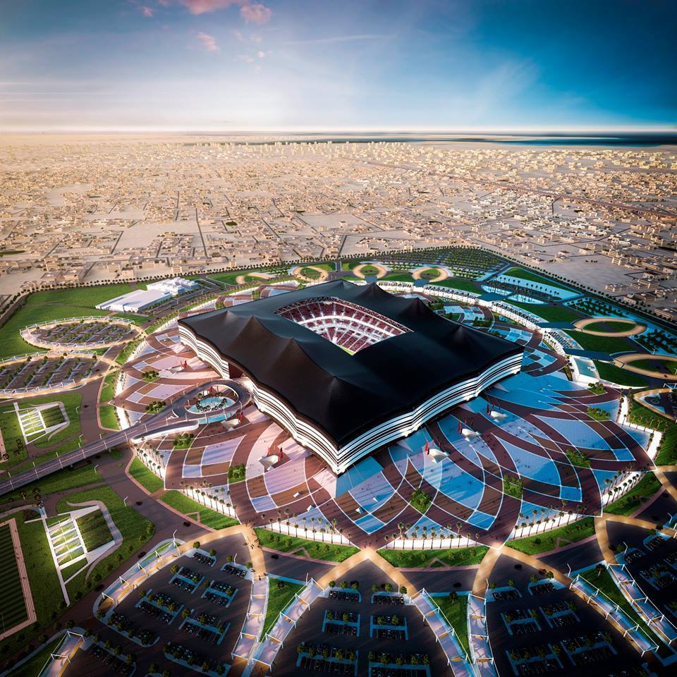
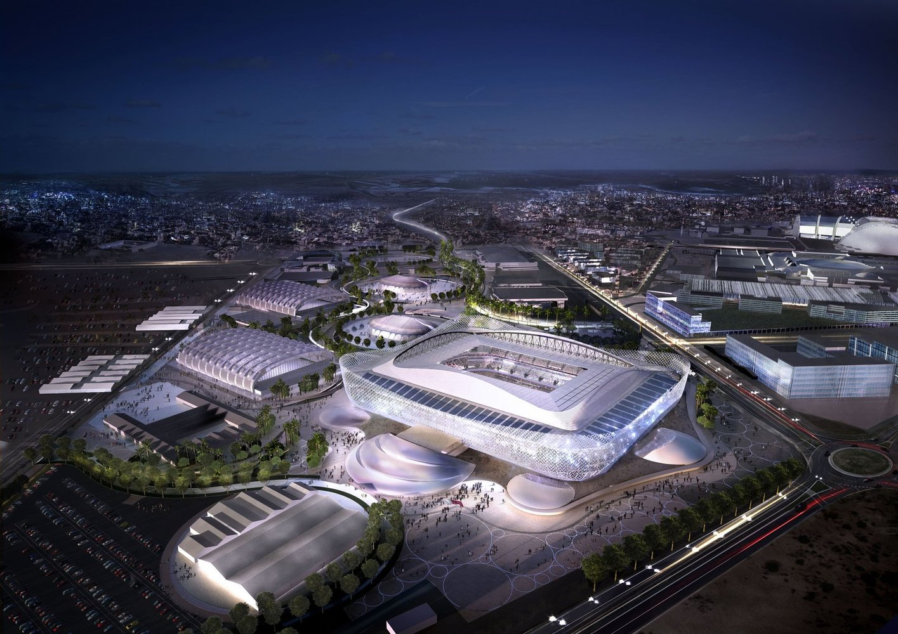

Estádio Internacional Khalifa

| Jogos no Internacional Khalifa - Fase de grupos | |||
|---|---|---|---|
| Data | Hora | Times | Grupo |
| Seg, 21 de Nov | 10h | Inglaterra X Irã | B |
| Qua, 23 de Nov | 10h | Alemanha X Japão | E |
| Sexta, 25 de Nov | 13h | Holanda x Equador | A |
| Dom, 27 de Nov | 13h | Croácia x Canadá | F |
| Ter, 29 de Nov | 12h | Equador x Senegal | A |
| Qui, 1 de Dez | 16h | Japão x Espanha | E |
Al bayt
| Jogos no Internacional Al bayt - Fase de grupos | |||
|---|---|---|---|
| Data | Hora | Times | Grupo |
| Seg, 12 de Nov | 13h | Catar x Equador | A |
| Qua, 23 de Nov | 7h | Marrocos x Croácia | F |
| Sex, 25 de Nov | 16h | Inglaterra x Estados Unidos | B |
| Dom, 27 de Nov | 16h | Espanha x Alemanha | E |
| Ter, 29 de Nov | 12h | Holanda x Catar | A |
| Qui, 1 de Dez | 16h | Costa Rica x Alemanha | E |
Al Rayyan
| Jogos no Internacional Al Rayyan - Fase de grupos | |||
|---|---|---|---|
| Data | Hora | Times | Grupo |
| Seg, 21 de Nov | 16h | Estados Unidos x País de Gales | B |
| Qua, 23 de Nov | 16h | Bélgica x Canadá | F |
| Qui, 25 de Nov | 7h | País de Gales x Irã | B |
| Dom, 27 de Nov | 7h | Japão x Costa Rica | E |
| Ter, 29 de Nov | 16h | País de Gales x Inglaterra | B |
| Qui, 1 de Dez | 12h | Croácia x Bélgica | F |
Al Janoub

| Jogos no Internacional Al Janoub - Fase de grupos | |||
|---|---|---|---|
| Data | Hora | Times | Grupo |
| Ter, 22 de Nov | 16h | França x Austrália | D |
| Qui, 24 de Nov | 7h | Suíça x Camarões | G |
| Sáb, 26 de Nov | 7h | Tunísia x Austrália | D |
| Seg, 28 de Nov | 7h | Camarões x Sérvia | G |
| Qua, 30 de Nov | 12h | Austrália x Dinamarca | D |
| Sex, 02 de Dez | 12h | Gana x Uruguai | H |